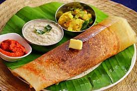

Ghee Roast
Ghee roast dosa is one of the popular dosa Variety liked by many folks...

Idli
Idli or idly is a type of savoury rice cake, originating from the Indian subcontinent, popular...

Masala Dosa
Masala Dosa, also called Masale dosey, is a South Indian dish. It is a type of dosa and has its origin in Udupi cuisine of Karnataka...

Puri
Poori or Puri is a traditional Indian fried bread that is delicious to enjoy with almost any main dish......